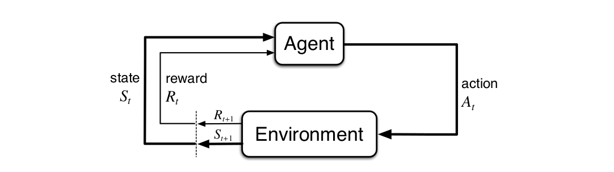
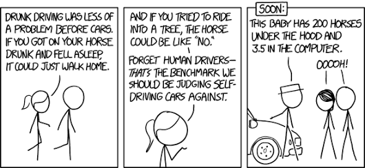

In the previous post we saw the what kind of technicalities Reinforcement learning present to us. We know what an agent-environment interface is. We also looked up the reward-punishment process. But there’s a lot of questions that still need to be answered. For example, - Where’s the boundary in agent-environment interface? - Do we rely on immediate rewards and overlook that reward generated in long term? - What are the characteristics of a state an agent is present in?
I’ll try to answer such questions while explaining MDPs.
MDPs are pretty much the whole process of an agent making decision and trying to maximize rewards. But things are much more complex that just that statement. To understand MDPs, we’ll first need to know what a Markov process is.
Markov Processes
A Markov process is a sequence of states over
disctrete time steps in such a way that the
past decisions do not affect the future decision making process.
The latter phrase is also know as the Markov Proporty. Formally, Markov property states that The future is independent of the past given the present. We can represent a markov process mathematically using a tuple (S, T). Here S represents a finite set of states and T is the state tranisition probabilty matrix. So basically if an agent makes a transition from a state S to S′, we can represent the markov process as:
$$
\begin{align}
P_{SS'} = p\left[S_{t + 1} = S' | S_{t} = S\right]
\end{align}
$$

© Sutton & Barto
Let’s break down the above equation into much simpler statements. Imagine an agent interacting with an environmnet over a series of time steps t = 0, 1, 2…. For each time step, the agent recieves a representation of the environment’s state which further results into the action taken. And when the agent recieves a numerical reward Rt + 1 for the action taken in the corresponding state St, it finds itself in a new state St + 1. So the series will look like:
$$
\begin{align}
S_0, A_0, R_1, S_1, A_1, R_2, S_2, A_2, R_3,...
\end{align}
$$
Note that we are considering discrete time steps only because it’s a lot more mathematically convenient although the idea can be extended to constinuous time steps.
In a finite MDP, the sets of states, actions, and rewards (S, A, and R) all have a finite number of elements. In this case, the random variables Rt and St have well defined discrete probability distributions dependent only on the preceding state and action. This means that for particular values of these random variables, s ∈ S and r ∈ R, there is a probabilty of those values occuring at time step t, given a particular value of peceding state and action. Mathematically, it can be stated as:
$$
\begin{align}
p\left(s', r | s, a\right) = Pr\left\{S_{t} = s', R_{t} = r | S_{t − 1} = s, A_{t − 1} = a\right\}
\end{align}
$$
The above definition is nothing but markov process with values. There are a lot of other notations that are conventionally used. In order to make the Markov process representation easier for us, let’s simplify it a little bit. Earlier, we had a tuple (S, T) that defined a markov process. Now we add two more elements to it, R and γ. Therefore, Markov reward process can be stated as (S, P, R, γ), where:
Reward function R,
$$ \begin{align} R_s = E\left[R_{t+1} | S_t = s\right] \end{align} $$State transition probabity matrix P,
$$ \begin{align} P_{SS'} = p\left[S_{t + 1} = S' | S_{t} = S\right] \end{align} $$Discount factor,
$$ \begin{align} \gamma \in [0, 1] \end{align} $$
Even after all such definitions, MDP framework is flexible and the idea can be extended to much more complex problems. One of them being considering continuous time duration instead of discrete time steps. Even the idea of actions can be extended. For example, some actions might control what an agent chooses to think about, or where it focuses its attention. There is no physical boundary between an agent and an environment. The general rule we follow is that anything that cannot be changed arbitrarily by the agent is considered to be outside of it and therefore part of the environment. We do not assume that everything in the environment is unknown to the agent. Also, the boundary can be located at different places for different purposes. The boundary for making high-level decisions can vary from the boundary for low-level decisions.
Now that we know what a Markov process is, we can generalize that any learning task that is based on actions, states and rewards can fit into this particular segment. Although, it is to be kept in mind that all the decision based learning problem might not be a markov process.
Examples
Let’s go ahead and frame some examples that we can think of as a Markov process.
One such example could be of a robot trying to escape from a maze. We can define the possible states as the position of the robot at a particular time step. The actions can be said to be the path it decides to take. For example, to move forward, backwards, or sideways. Rewards can be negative if the robot collides with a wall for his action and positive for every correct action. Therefore, this particular example can be stated as a tuple (S, P, R, γ) which is the definition of a Markov reward process.
Another example can be learning how to drive a car around the streets. The state could be a vector representing the distance to each of the lateral sides, the directional heading, the velocity and acceleration of the car. The actions could be to change any of the state vectors i.e. to accelerate or decelerate or to change heading. The rewards could be zero if the car is proceeding comfortably along and minus one if the car collides with an obstable(person, wall etc).

© xkcd
Returns and Value function
Until now we’ve looked into the kind of reinforcement learning tasks and the concept of states. Previously, we saw that the agent’s goal is to maximize the cumulative reward it receives in the long run. How might this be defined formally? I’ll be answering such questions in this section.
Let’s suppose that sequence of rewards received after time step t is denoted Rt + 1, Rt + 2 , Rt + 3. What we need to do is maximize the expected return, denoted by Gt, is defined as some specific function of the reward sequence. We say some specific function because there are multiple forms to it. The simplest being:
$$
\begin{align}
G_t = R_{t+1} + R_{t+2} + R_{t+3} + \cdots + R_T
\end{align}
$$
where T is the final time step in the sequence. But what if T = ∞ i.e., the task goes on to continue without any limit. Then the return value as per the stated formula becomes problematic because it could easily tend to infinty. Therefore, we introduce the concept of discounting. According to this approach, the agent tries to select actions so that the sum of the discounted rewards it receives over the future is maximized. In particular, it chooses At to maximize the expected discounted return.
$$
\begin{align}
G_t & = R_{t+1} + \gamma R_{t+2} + \gamma^2R_{t+3} + \cdots \\
& = \sum_{k=0}^\infty \gamma^k R_{t + k + 1}
\end{align}
$$
- The discount γ ∈ [0, 1] is the present value of future rewards.
- The value of receiving reward R after k + 1 time-steps is γkR.
- If γ = 0, the agent is myopic in being concerned only with maximizing immediate rewards. The objective being learning how to choose At in order to maximize only Rt + 1.
- If γ = 1, the return objective takes future rewards into account more strongly. We can say that the agent becomes more farsighted.
Here, the discount rate determines the present value of future rewards: a reward received k time steps in the future is worth only γk − 1 times what it would be worth if it were received immediately. But other than being mathematically convenient, what may be the possible advantages of discounted return? One of the factor is that discounted return avoid infinte returns in a cyclic markov process as the math doesn’t work out well for cyclic cases. Another reason is the uncertainity about the future as it may not be fully represented.
Policies and Value Functions
There is a notion of effective state that measures the future rewards in terms of expected return. These functions of states that measure it’s effectiveness i.e., how good it is for an agent to be in that particular state are called Value functions. But value functions are defined with respect to particular ways of acting, called policies.
Formally, a policy can be defined as a mapping from states
to probabilities of selecting each possible action.A policy in reinforcement learning is denoted by π. So, if an agent is following a policy π at a given time step t, then π(a∥s) is the probability that At = a if St = s. The value of a state s under a policy π, denoted vπ(s), is the expected return when starting in s and following π thereafter. Basically, a value function of a state tells us how good it is for our agent to be in that particular state under some policy π. Therefore, if we state the value mathematically for MDPs
$$
\begin{align}
v_\pi (s) = E_\pi\left[G_t | S_t = s\right]
\end{align}
$$
where Eπ[] denotes the expected value of a random variable given that the agent follows policy π, and t is any time step. Similarly, we define the value of taking action a in state s under a policy π as Action-value function for policy π and it can be stated as
$$
\begin{align}
q_\pi (s, a) = E_\pi\left[G_t | S_t = s, A_t = a\right]
\end{align}
$$
The value functions vπ and qπ are estimated from experience. In general, we solve a reinforcement learning task by finding a policy that maximizes the output of the value function over the long run. Therefore, out of existant policies, we chose one that generates the maximum reward. A policy π will be preferred over a policy π′ if its expected return is greater than or equal to that of π′ for all states. This is called an optimal policy. Note that if there exists more than one optimal policy then all of them must share the same state-value function and action-value function.
Bellman Equation
The Bellman equation expresses the relationship between a value of a state and the value of a successor state and they are crucial to understand how Reinforcement Learning algorithms work. To derive Bellman equation, we go back to the value function,
$$
\begin{align}
v_\pi (s) = E_\pi\left[G_t | S_t = s\right]
\end{align}
$$
This value function can be decomposed into two parts: - Immediate reward Rt + 1 - And discount values of succeding states
$$
\begin{align}
v_\pi (s) & = E\left[G_t | S_t = s\right]\\
& = E\left[R_{t+1} + \gamma R_{t+2} + \gamma^2R_{t+3} + \cdots | S_t = s\right] \\
& = E\left[R_{t+1} + \gamma (R_{t+2} + \gamma R_{t+3} + \cdots) | S_t = s\right] \\
& = E\left[R_{t+1} + \gamma G_{t+1} | S_t = s\right]
\end{align}
$$
In the above equation Gt + 1 is the discounted expected return of successor states and can be replaced by v(St + 1), giving us:
$$
\begin{align}
v_\pi (s) & = E\left[G_t | S_t = s\right]\\
& = E\left[R_{t+1} + \gamma v(S_{t+1}) | S_t = s\right]
\end{align}
$$
This equation is called the Bellman’s equation for a Markov process. Keep in mind that Bellman equation exists for both value function and action-value function.
$$
\begin{align}
q_\pi (s, a) & = E_\pi\left[G_t | S_t = s, A_t = a\right]\\
& = E\left[R_{t+1} + \gamma q_\pi(S_{t+1}, A_{t+1}) | S_t = s, A_t = a\right]
\end{align}
$$
We can see that Bellman equation is a linear equation. So if we know the value of st + 1, we can easily calculate the value of st. This opens a lot of doors for iterative approaches for calculating the value for each state, since if we know the value of the next state, we can know the value of the current state.
In the next post, we’ll be utilising the concepts of policies, states and actions to code our first RL agent. We’ll also see how Bellman equation is helpful in RL scenarios.